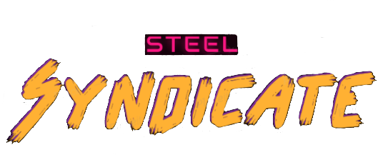

>

 Programmed animation triggers for enemies
Composed the game’s main music theme
Created the main menu and its functionality
Programmed animation triggers for enemies
Composed the game’s main music theme
Created the main menu and its functionality
Steel Syndicate
A sci-fi fast-paced first-person shooter with dynamic platforming. Blast through enemy filled levels with an enormous array of powerful weapons. Personal Contributions: Programmed enemy AI, player movement and dynamic weapons system Rigged and programmed enemy animations Aquired and implemented game sound effects Assisted with level design
Chaos and Catacombs
itch.io/chaos-and-catacombs A 2D Action-Adventure platformer with some randomization elements. Traverse through challenging dungeons, encounter difficult bosses, and experience a Dungeons and Dragons inspired story. Personal Contributions: Designed and developed the games enemies and bosses Programmed miscellaneous mechanics such as enemies dropping items, boss movement/attacks, enemy animations.
Programmed animation triggers for enemies
Composed the game’s main music theme
Created the main menu and its functionality